高速Wi-Fi × ギガ対応回線
プレミアムサービスにおけるルータの設置方法
プレミアムサービスにおけるルータの設置方法
このページでは、NECプラットフォームズ社製のAterm WG1810HPを例としてプレミアムサービスでご提供する高速Wi-Fiルータの設置/設定方法をご案内いたします。
1.NTTからレンタルされている機器（ONU（回線終端装置）やひかり電話対応ホームゲートウェイなど）に添付されているマニュアルなどを手元に用意しておきます。
2.WG1810HPの設置場所を決め、必要に応じてスタンドを取り付けておきます
設置場所の注意事項やスタンドの取り付け方については、WG1810HPに添付の「つなぎかたガイド」を参照してください。
3.現在のインターネット接続の状態を確認します
ひかり電話の利用の有無や、機器構成によってWG1810HPの設置のしかたが異なります。まずはひかり電話の契約状況や、機器構成を確認しておきましょう。
自分の接続情報を確認したら、以下から自分にあった方法を選び、設定方法をご覧ください。
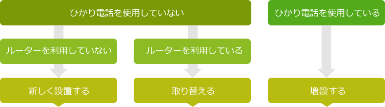
1.WG1810HPの設置場所を確認します
ひかり電話を利用しておらず、今までにルータの利用もしていない場合は、今回お届けしたWG1810HPをONU（回線終端装置）とパソコンの間に設置します。
※電話がつながっていないことを今一度ご確認ください。
電話がつながっている場合は、「ひかり電話を利用している場合」を読んでください。
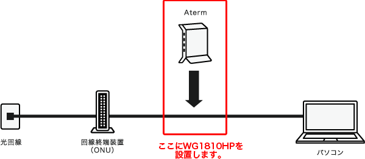
2.インターネット回線に接続しているパソコンの電源を切ります
3.パソコンの「LAN」ポートにつながっているLANケーブルを外します
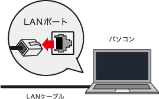
4.回線終端装置（ONU）の電源を切ります
電源の切り方については、回線終端装置（ONU）に添付されているマニュアルを確認してください。
5.パソコンから取り外したLANケーブルの端子を、WG1810HPの「WAN」ポートにカチッと音がするまで差し込みます
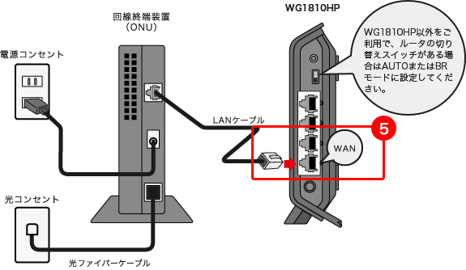
6.回線終端装置（ONU）の電源を入れます
電源の入れ方については、回線終端装置（ONU）のマニュアルを確認してください。
7.WG1810HPの電源を入れ、約40秒待ちます
ACアダプタを接続すると、電源が入ります。いったん側面（表）のすべてのランプが緑点灯します。正常動作するまで、約40秒お待ちください。
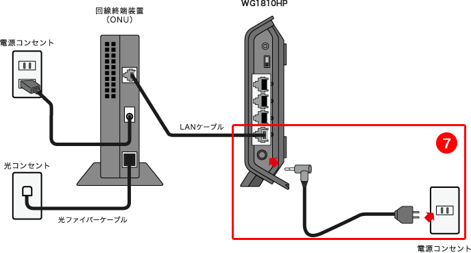
8.WG1810HPのランプが下記の通り点灯しているか確認します
WANランプが緑点灯しない場合は、ケーブルがしっかり差し込まれているか、回線終端装置（ONU）の電源が入っているかなどを確認してください。
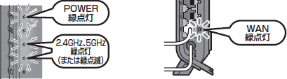
9.WG1810HPの「LAN」ポート、パソコンの「LAN」ポートに、それぞれ添付のLANケーブル（ETHERNETケーブル）を差し込みます
LANポートは、「LAN1」～「LAN4」と4つありますが、LANという文字列があるところならどこでも大丈夫です。
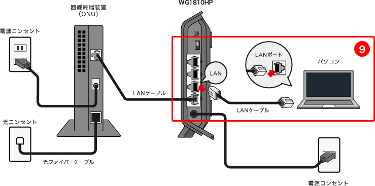
10.パソコンのPPPoE設定を削除します
ご利用のパソコンのPPPoE設定が残っていると次世代ネットワークに接続されないため、設定を削除します。
Windowsをご利用のお客さまは、[コントロールパネル]の[ネットワーク接続]からPPPoE設定のアイコンを削除してください。
PPPoE設定の削除の方法は、以下のページを参考に行ってください。
1.WG1810HPの設置場所を確認します
下図のような構成でご利用の場合は、ルータを取り換えます。
※電話がつながっていないことを今一度ご確認ください。
電話がつながっている場合は、「ひかり電話を利用している場合」を読んでください。
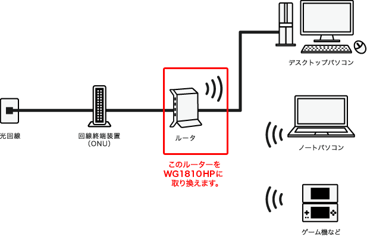
2.インターネット回線に接続しているパソコンの電源を切ります
3.回線終端装置（ONU）の電源を切ります
電源の切り方については、回線終端装置（ONU）のマニュアルを確認してください。
4.今まで利用していたルータ背面の「WAN」ポートにつながっているLANケーブルを外します
5.手順４で取り外したLANケーブルの端子を、WG1810HPの「WAN」ポートにカチッと音がするまで差し込みます

6.回線終端装置（ONU）の電源を入れます
電源の入れ方については、回線終端装置（ONU）のマニュアルを確認してください。
7.WG1810HPの電源を入れ、約40秒待ちます
ACアダプタを接続すると、電源が入ります。いったん側面（表）のすべてのランプが緑点灯します。正常動作するまで、約40秒お待ちください。
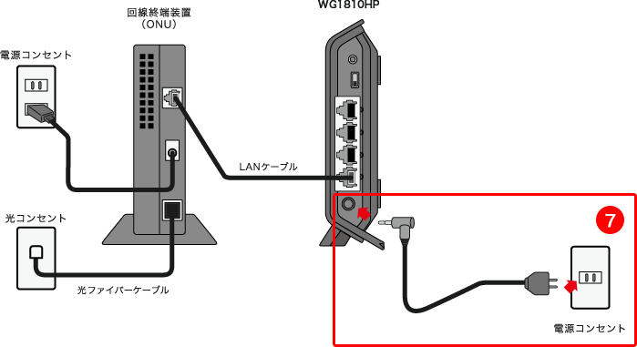
8.WG1810HPのランプが下記の通り点灯しているか確認します
WANランプが緑点灯しない場合は、ケーブルがしっかり差し込まれているか、回線終端装置（ONU）の電源が入っているかなどを確認してください。
9.今まで利用していたルータの背面の「LAN」ポートにつながっているLANケーブルを外します
10.手順9で取り外したLANケーブルの端子を、 WG1810HPの「LAN」ポートに差し込みます
LANポートは、「LAN1」～「LAN4」と4つありますが、LANという文字列があるところならどこでも大丈夫です。
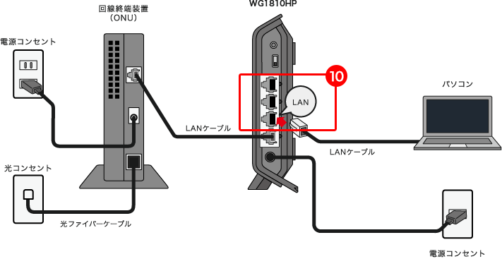
1.WG1810HPの設置場所を確認します
ひかり電話をお使いの場合は、WG1810HPをご家庭のネットワークに増設します。
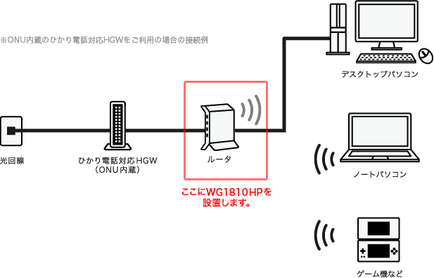
この場所にすでにルータが接続されている場合は
このルータを取り替えます。今まで利用していたルータ背面の「WAN」ポートと「LAN」ポートにつながっているLANケーブルを外します。
2.インターネット回線に接続しているパソコンの電源を切ります
3.回線終端装置（ONU）の電源を切ります
電源の切り方については、回線終端装置（ONU）のマニュアルを確認してください。
4.パソコンの「LAN」ポートにつながっているLANケーブルを取り外し、WG1810HPの「WAN」ポートにカチッと音がするまで差し込みます
すでにルータが接続されていた場合は
今まで利用していたルータの背面の「WAN」ポートから外したLANケーブルの端子をWG1810HPの「WAN」ポートに差し込みます。
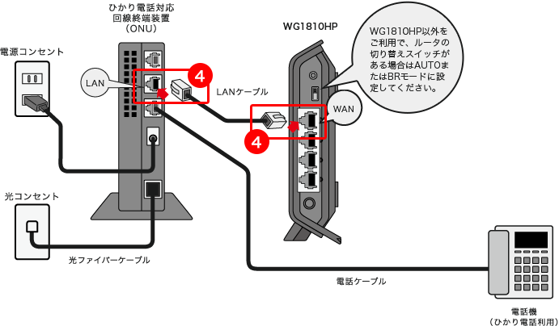
5.回線終端装置（ONU）の電源を入れます
電源の入れ方については、回線終端装置（ONU）のマニュアルを確認してください。
6.WG1810HPの電源を入れ、約40秒待ちます
ACアダプタを接続すると、電源が入ります。いったん側面（表）のすべてのランプが緑点灯します。正常動作するまで、約40秒お待ちください。
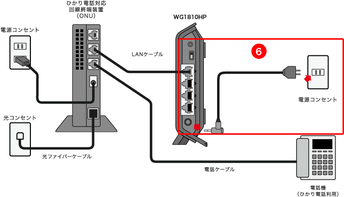
7.WG1810HPのランプが下記の通り点灯しているか確認します
WANランプが緑点灯しない場合は、ケーブルがしっかり差し込まれているか、回線終端装置（ONU）の電源が入っているかなどを確認してください。
8.WG1810HPの「LAN」ポート、パソコンの「LAN」ポートに、それぞれ添付のLANケーブル（ETHERNETケーブル）を差し込みます
WG1810HPのLANポートは、「LAN1」～「LAN4」と4つありますが、LANという文字列があるところならどこでも大丈夫です。
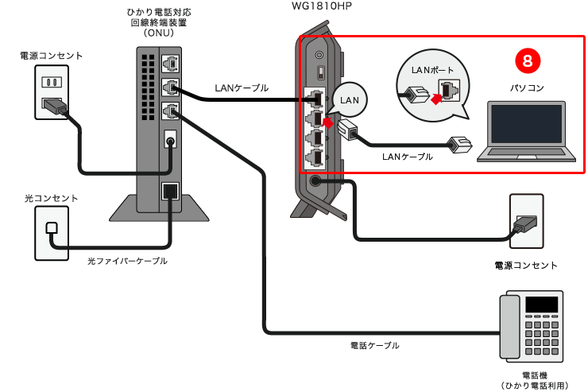
すでにルータが接続されていた場合は
今まで利用していたルータの背面の「LAN」ポートから外したLANケーブルの端子を、新しいルータの「LAN」ポートに差し込みます。
BUFFALO WXR-1750DHPが提供されている方は
ひかり電話対応ルータ（図中ではひかり電話対応回線終端装置（ONU））にPPPoE設定が残っていると次世代ネットワークに接続されないため、ルータを初期化します。ルータの前面または背面に初期化スイッチがあるので長押ししてください。
以上でWG1810HPの設置は終了です。インターネットの接続設定は不要です。
他の機器を無線接続する場合は、無線接続設定に進んでください。
スマートフォン、ゲーム機の無線LAN設定方法については、下記をご覧ください。
→ 無線LAN接続設定方法
1.パソコンの無線機能（ワイヤレス機能）を有効にします
設定方法は、パソコンに添付の取扱説明書などを参照してください。
2.通知領域（タスクトレイ）に表示されているネットワークアイコンをクリックします
※タスクトレイは、ディスプレイの右下に表示されます。
Windows 10の場合
3.「WG1810HP」という文字列の入ったネットワーク名（SSID）をクリックします
工場出荷時のネットワーク名（オーナーSSID）は、WG1810HPに貼付されているラベルに記載されています。
4.「接続」をクリックします
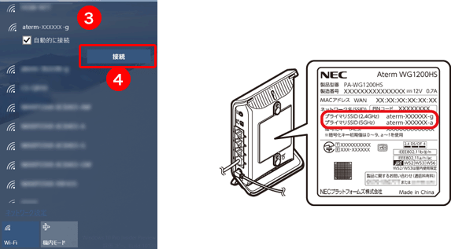
画面は、Windows 10の場合の画面例です。
5.暗号化キーを入力します
工場出荷時のオーナーSSIDの暗号化キーは、WG1810HPに貼付されているラベルに記載されています。
6.「次へ」をクリックします
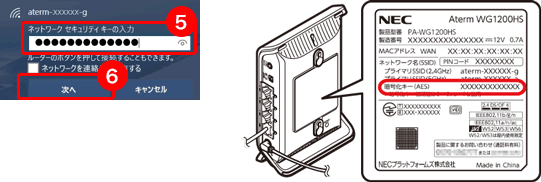
接続に失敗した場合は
パスワードが間違っていることが考えられますので、手順２から接続設定をし直してください。
前も工事の人に設定してもらったし、身近に詳しい人がいない…失敗したらどうしたらいいの？不安です。
ご安心ください。そんな方のために「訪問サポート」もご用意しています。
ルータの設置から無線設定まで、すべてお任せらくらくです。設定に不安のある方は、ぜひご利用ください。